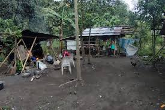

History of Dumagats
The Dumagat Remontado are an indigenous people, descendants of lowlanders who fled from Spanish colonizers and chose to live in the mountains. The word Remontado derives from the Spanish word for flee. They also attribute this word to being mixed-blooded as they intermarried with the Negritos living in the mountains.
Dumagat/Remontados belong to an indigenous community in Rizal Province, Philippines. Being the original inhabitants of the forest they have built strong ties to their lands as a result of living in the forest for generations.
They value all of the resources found in their ancestral land because they believe that it came from the Supreme Being they called “Makidepat” and that they should protect and preserve it as a legacy for the next generation.
Where is the Dumagat tribe located?
Located at the foot of the majestic Sierra Madre mountain range, Sitios Magata and Manggahan had remained unconnected to the Philippines’ power grid due to their remote location and the threat of flooding with the construction of the then proposed Laiban Dam.